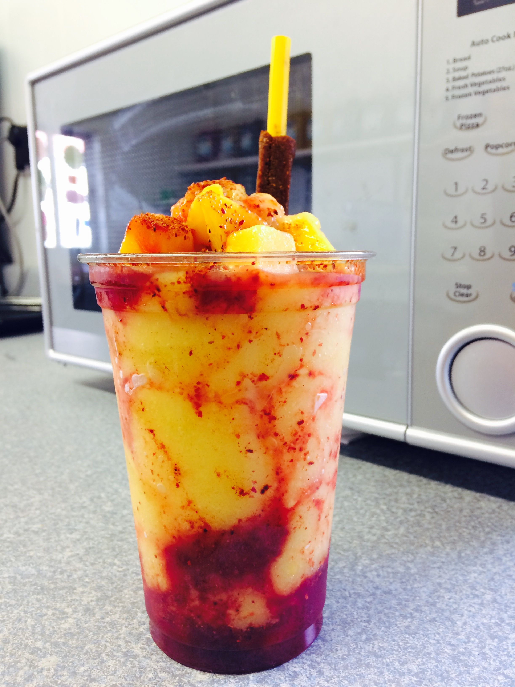

Las Tejanitas
Las Tejanitas is a local, family owned trpoical dessert shop, located less than a quarter mile from the UNCG campus.
They specialize in tasty fruit drinks and treats with a twist, often combing sweet and spicy flavors to create the perfect
treats for a hot day. Below you'll find 3 EPIC menu tiems that will be sure to add
Las Tejanitas to your list of best small businesses in Greensboro!
Hours - everyday, 12pm-8pm
Address - 1030 W Gate City Blvd, Greensboro, NC



Mangonada - $
The Mangonada is a delicous sweet and spicy treat that is sure to cool your thirst on a hot day. Ths drink is a blend of mango smoothie, chamoy, tahini, and delicious slices of fresh mango. The sweet and spicy flavors complement each other perfectly, making it a crowd favorite. Make sure to enjoy the spicy treat on the straw as well!
The Mangonada is a delicous sweet and spicy treat that is sure to cool your thirst on a hot day. Ths drink is a blend of mango smoothie, chamoy, tahini, and delicious slices of fresh mango. The sweet and spicy flavors complement each other perfectly, making it a crowd favorite. Make sure to enjoy the spicy treat on the straw as well!
Cucumber Lime Aguas Frescas - $
The Cucumber Lime Aguas Frescas is a deliciously cool and sweet drink that combines the fresh taste of cucumber with the sweet tangy zest of a fresh lime. This drink is a favorite for a reason, it appeals to many people as it is not too sweet, and still has a strong flavor profile. This is the perfect drink for a summer day, or if you are just running errands and need something tasty to sip on.
The Cucumber Lime Aguas Frescas is a deliciously cool and sweet drink that combines the fresh taste of cucumber with the sweet tangy zest of a fresh lime. This drink is a favorite for a reason, it appeals to many people as it is not too sweet, and still has a strong flavor profile. This is the perfect drink for a summer day, or if you are just running errands and need something tasty to sip on.
Mexican Street Corn = $
Mexican Street Corn is a favorite as a side dish, tasty dessert, or as a midday snack. Its a versatile snack that combines sweet corn with spicy Hot Cheetos or Takis to create a flavor explosion. The delicious mayaonaise and cotija cheese that is mixed in with the corn, topped with a squeeze of lime makes the perfect snack for yourself or for sharing with friends.
Mexican Street Corn is a favorite as a side dish, tasty dessert, or as a midday snack. Its a versatile snack that combines sweet corn with spicy Hot Cheetos or Takis to create a flavor explosion. The delicious mayaonaise and cotija cheese that is mixed in with the corn, topped with a squeeze of lime makes the perfect snack for yourself or for sharing with friends.